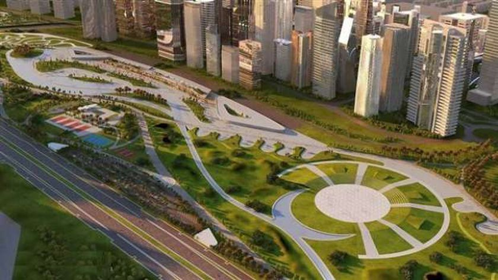

ية معلقة
اهم معلومات عن المترو
1 -المترو هو وسيلة نقل جماعي كثيفة أحادي السكة ويسير على كمرة خرسانية معلقة.
-2 تبلغ السعة القصوى المترو الحديث حوالى مليون راكب يومياً.
-3 الهدف منه تعظيم منظومة النقل الجماعى على مستوى الجمهورية بما فيها المدن الجديدة.
-4 سيجرى إدخاله فى مصر لأول مرة وسيمثل نقلة وتحولا كبيرا في وسائل المواصلات.
-5 هذه النوعية من المواصلات تتسم بأنها وسائل نقل سريعة وعصرية وآمنة وصديقة للبيئة.
-6 توفر استهلاك الوقود وتخفض معدلات التلوث البيئي وتخفف الاختناقات المرورية بالمحاور والشوارع
الرئيسية.